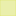

<!doctype html>
<html lang="en">
    <head>
        <meta charset="utf-8">
        <meta http-equiv="X-UA-Compatible" content="IE=edge">
        <meta name="viewport" content="initial-scale=1,user-scalable=no,maximum-scale=1,width=device-width">
        <meta name="mobile-web-app-capable" content="yes">
        <meta name="apple-mobile-web-app-capable" content="yes">
        <link rel="stylesheet" href="css/leaflet.css">
        <link rel="stylesheet" href="css/L.Control.Layers.Tree.css">
        <link rel="stylesheet" href="css/qgis2web.css">
        <link rel="stylesheet" href="css/fontawesome-all.min.css">
        <link rel="stylesheet" href="css/leaflet-control-geocoder.Geocoder.css">
        <link rel="stylesheet" href="css/leaflet-measure.css">
        <style>
        html, body, #map {
            width: 100%;
            height: 100%;
            padding: 0;
            margin: 0;
        }
        </style>
        <title>HTW Interaktive Karte</title>
    </head>
    <body>
        <div id="map">
        </div>

        <!-- Chat Lines 1 ------------- -->
        
        <!-- -------------------------- -->

        <script src="js/qgis2web_expressions.js"></script>
        <script src="js/leaflet.js"></script>
        <script src="js/L.Control.Layers.Tree.min.js"></script>
        <script src="js/leaflet.rotatedMarker.js"></script>
        <script src="js/leaflet.pattern.js"></script>
        <script src="js/leaflet-hash.js"></script>
        <script src="js/Autolinker.min.js"></script>
        <script src="js/rbush.min.js"></script>
        <script src="js/labelgun.min.js"></script>
        <script src="js/labels.js"></script>
        <script src="js/leaflet-control-geocoder.Geocoder.js"></script>
        <script src="js/leaflet-measure.js"></script>
        <script src="data/Gebude_1.js"></script>
        <script src="data/PkwParkpltze_2.js"></script>
        <script src="data/Motorradstellpltze_3.js"></script>
        <script src="data/Fahrradparkpltze_4.js"></script>
        <script src="data/Bushaltestellen_5.js"></script>
        <script src="data/AndereHTWStandorte_6.js"></script>
        <script src="data/EPkwLadestationen_7.js"></script>
        <script>
        var highlightLayer;
        function highlightFeature(e) {
            highlightLayer = e.target;
            highlightLayer.openPopup();
        }
        var map = L.map('map', {
            zoomControl:false, maxZoom:28, minZoom:1
        }).fitBounds([[49.24210358442282,7.010867314353869],[49.244787035262476,7.019037652410322]]);
        var hash = new L.Hash(map);
        map.attributionControl.setPrefix('<a href="https://github.com/tomchadwin/qgis2web" target="_blank">qgis2web</a> &middot; <a href="https://leafletjs.com" title="A JS library for interactive maps">Leaflet</a> &middot; <a href="https://qgis.org">QGIS</a>');
        var autolinker = new Autolinker({truncate: {length: 30, location: 'smart'}});
        // remove popup's row if "visible-with-data"
        function removeEmptyRowsFromPopupContent(content, feature) {
         var tempDiv = document.createElement('div');
         tempDiv.innerHTML = content;
         var rows = tempDiv.querySelectorAll('tr');
         for (var i = 0; i < rows.length; i++) {
             var td = rows[i].querySelector('td.visible-with-data');
             var key = td ? td.id : '';
             if (td && td.classList.contains('visible-with-data') && feature.properties[key] == null) {
                 rows[i].parentNode.removeChild(rows[i]);
             }
         }
         return tempDiv.innerHTML;
        }
        // add class to format popup if it contains media
		function addClassToPopupIfMedia(content, popup) {
			var tempDiv = document.createElement('div');
			tempDiv.innerHTML = content;
			if (tempDiv.querySelector('td img')) {
				popup._contentNode.classList.add('media');
					// Delay to force the redraw
					setTimeout(function() {
						popup.update();
					}, 10);
			} else {
				popup._contentNode.classList.remove('media');
			}
		}
        var title = new L.Control({'position':'topleft'});
        title.onAdd = function (map) {
            this._div = L.DomUtil.create('div', 'info');
            this.update();
            return this._div;
        };
        title.update = function () {
            this._div.innerHTML = '<h2>HTW Interaktive Karte</h2>';
        };
        title.addTo(map);
        var abstract = new L.Control({'position':'topleft'});
        abstract.onAdd = function (map) {
            this._div = L.DomUtil.create('div',
            'leaflet-control abstract');
            this._div.id = 'abstract'

                abstract.show();
                return this._div;
            };
            abstract.show = function () {
                this._div.classList.remove("abstract");
                this._div.classList.add("abstractUncollapsed");
                this._div.innerHTML = 'Campus Rotenbühl';
        };
        abstract.addTo(map);
        var zoomControl = L.control.zoom({
            position: 'topleft'
        }).addTo(map);

        // Chat lines 2 -------------------------------------------
        var osmGeocoder = new L.Control.Geocoder({
            collapsed: true,
            position: 'topleft',
            text: 'Search',
            title: 'Testing'
        }).addTo(map);
        document.getElementsByClassName('leaflet-control-geocoder-icon')[0]
        .className += ' fa fa-search';
        document.getElementsByClassName('leaflet-control-geocoder-icon')[0]
        .title += 'Search for a place';
        // --------------------------------------------------------

        var measureControl = new L.Control.Measure({
            position: 'topleft',
            primaryLengthUnit: 'meters',
            secondaryLengthUnit: 'kilometers',
            primaryAreaUnit: 'sqmeters',
            secondaryAreaUnit: 'hectares'
        });
        measureControl.addTo(map);
        document.getElementsByClassName('leaflet-control-measure-toggle')[0].innerHTML = '';
        document.getElementsByClassName('leaflet-control-measure-toggle')[0].className += ' fas fa-ruler';
        var bounds_group = new L.featureGroup([]);
        function setBounds() {
        }
        map.createPane('pane_Basemap_0');
        map.getPane('pane_Basemap_0').style.zIndex = 400;
        var layer_Basemap_0 = L.tileLayer('https://a.basemaps.cartocdn.com/light_all/{z}/{x}/{y}.png', {
            pane: 'pane_Basemap_0',
            opacity: 1.0,
            attribution: '<a href="https://cartodb.com/basemaps/">Map tiles by CartoDB, under CC BY 3.0. Data by OpenStreetMap, under ODbL.</a>',
            minZoom: 1,
            maxZoom: 28,
            minNativeZoom: 0,
            maxNativeZoom: 20
        });
        layer_Basemap_0;
        map.addLayer(layer_Basemap_0);
        function pop_Gebude_1(feature, layer) {
            layer.on({
                mouseout: function(e) {
                    if (typeof layer.closePopup == 'function') {
                        layer.closePopup();
                    } else {
                        layer.eachLayer(function(feature){
                            feature.closePopup()
                        });
                    }
                },
                mouseover: highlightFeature,
            });
            var popupContent = '<table>\
                    <tr>\
                        <td colspan="2">' + (feature.properties['fid'] !== null ? autolinker.link(feature.properties['fid'].toLocaleString()) : '') + '</td>\
                    </tr>\
                    <tr>\
                        <th scope="row">Gebäude Nummer</th>\
                        <td class="visible-with-data" id="Geb_Nummer">' + (feature.properties['Geb_Nummer'] !== null ? autolinker.link(feature.properties['Geb_Nummer'].toLocaleString()) : '') + '</td>\
                    </tr>\
                    <tr>\
                        <td colspan="2">' + (feature.properties['Gebäude N'] !== null ? autolinker.link(feature.properties['Gebäude N'].toLocaleString()) : '') + '</td>\
                    </tr>\
                </table>';
            var content = removeEmptyRowsFromPopupContent(popupContent, feature);
			layer.on('popupopen', function(e) {
				addClassToPopupIfMedia(content, e.popup);
			});
			layer.bindPopup(content, { maxHeight: 400 });
        }

        function style_Gebude_1_0() {
            return {
                pane: 'pane_Gebude_1',
                stroke: false, 
                fill: true,
                fillOpacity: 1,
                fillColor: 'rgba(164,38,139,1.0)',
                interactive: false,
            }
        }
        map.createPane('pane_Gebude_1');
        map.getPane('pane_Gebude_1').style.zIndex = 401;
        map.getPane('pane_Gebude_1').style['mix-blend-mode'] = 'normal';
        var layer_Gebude_1 = new L.geoJson(json_Gebude_1, {
            attribution: '',
            interactive: false,
            dataVar: 'json_Gebude_1',
            layerName: 'layer_Gebude_1',
            pane: 'pane_Gebude_1',
            onEachFeature: pop_Gebude_1,
            style: style_Gebude_1_0,
        });
        bounds_group.addLayer(layer_Gebude_1);
        map.addLayer(layer_Gebude_1);
        function pop_PkwParkpltze_2(feature, layer) {
            layer.on({
                mouseout: function(e) {
                    if (typeof layer.closePopup == 'function') {
                        layer.closePopup();
                    } else {
                        layer.eachLayer(function(feature){
                            feature.closePopup()
                        });
                    }
                },
                mouseover: highlightFeature,
            });
            var popupContent = '<table>\
                    <tr>\
                        <th scope="row">- Pkw-Parkplatz</th>\
                        <td class="visible-with-data" id="Pkw-Parkplatz">' + (feature.properties['Pkw-Parkplatz'] !== null ? autolinker.link(feature.properties['Pkw-Parkplatz'].toLocaleString()) : '') + '</td>\
                    </tr>\
                    <tr>\
                        <th scope="row">Stellen:</th>\
                        <td class="visible-with-data" id="Stelle">' + (feature.properties['Stelle'] !== null ? autolinker.link(feature.properties['Stelle'].toLocaleString()) : '') + '</td>\
                    </tr>\
                </table>';
            var content = removeEmptyRowsFromPopupContent(popupContent, feature);
			layer.on('popupopen', function(e) {
				addClassToPopupIfMedia(content, e.popup);
			});
			layer.bindPopup(content, { maxHeight: 400 });
        }

        // Change "fillOpacity" manually -------------------------
        function style_PkwParkpltze_2_0() {
            return {
                pane: 'pane_PkwParkpltze_2',
                opacity: 1,
                color: 'rgba(245,155,71,1.0)',
                dashArray: '',
                lineCap: 'butt',
                lineJoin: 'miter',
                weight: 1.0, 
                fill: true,
                fillOpacity: 0.5,
                fillColor: 'rgba(245,155,71,1.0)',
                interactive: true,
            }
        }
        map.createPane('pane_PkwParkpltze_2');
        map.getPane('pane_PkwParkpltze_2').style.zIndex = 402;
        map.getPane('pane_PkwParkpltze_2').style['mix-blend-mode'] = 'normal';
        var layer_PkwParkpltze_2 = new L.geoJson(json_PkwParkpltze_2, {
            attribution: '',
            interactive: true,
            dataVar: 'json_PkwParkpltze_2',
            layerName: 'layer_PkwParkpltze_2',
            pane: 'pane_PkwParkpltze_2',
            onEachFeature: pop_PkwParkpltze_2,
            style: style_PkwParkpltze_2_0,
        });
        bounds_group.addLayer(layer_PkwParkpltze_2);
        map.addLayer(layer_PkwParkpltze_2);
        function pop_Motorradstellpltze_3(feature, layer) {
            layer.on({
                mouseout: function(e) {
                    if (typeof layer.closePopup == 'function') {
                        layer.closePopup();
                    } else {
                        layer.eachLayer(function(feature){
                            feature.closePopup()
                        });
                    }
                },
                mouseover: highlightFeature,
            });
            var popupContent = '<table>\
                    <tr>\
                        <th scope="row">- Motorradstellplatz</th>\
                        <td class="visible-with-data" id="Motorradstellplatz">' + (feature.properties['Motorradstellplatz'] !== null ? autolinker.link(feature.properties['Motorradstellplatz'].toLocaleString()) : '') + '</td>\
                    </tr>\
                    <tr>\
                        <th scope="row">Stellen:</th>\
                        <td class="visible-with-data" id="Stelle">' + (feature.properties['Stelle'] !== null ? autolinker.link(feature.properties['Stelle'].toLocaleString()) : '') + '</td>\
                    </tr>\
                    <tr>\
                        <th scope="row">Art:</th>\
                        <td class="visible-with-data" id="Art">' + (feature.properties['Art'] !== null ? autolinker.link(feature.properties['Art'].toLocaleString()) : '') + '</td>\
                    </tr>\
                </table>';
            var content = removeEmptyRowsFromPopupContent(popupContent, feature);
			layer.on('popupopen', function(e) {
				addClassToPopupIfMedia(content, e.popup);
			});
			layer.bindPopup(content, { maxHeight: 400 });
        }

        // Change "fillOpacity" manually -------------------------
        function style_Motorradstellpltze_3_0() {
            return {
                pane: 'pane_Motorradstellpltze_3',
                opacity: 1,
                color: 'rgba(216,225,89,1.0)',
                dashArray: '',
                lineCap: 'butt',
                lineJoin: 'miter',
                weight: 1.0, 
                fill: true,
                fillOpacity: 0.8,
                fillColor: 'rgba(216,225,89,1.0)',
                interactive: true,
            }
        }
        map.createPane('pane_Motorradstellpltze_3');
        map.getPane('pane_Motorradstellpltze_3').style.zIndex = 403;
        map.getPane('pane_Motorradstellpltze_3').style['mix-blend-mode'] = 'normal';
        var layer_Motorradstellpltze_3 = new L.geoJson(json_Motorradstellpltze_3, {
            attribution: '',
            interactive: true,
            dataVar: 'json_Motorradstellpltze_3',
            layerName: 'layer_Motorradstellpltze_3',
            pane: 'pane_Motorradstellpltze_3',
            onEachFeature: pop_Motorradstellpltze_3,
            style: style_Motorradstellpltze_3_0,
        });
        bounds_group.addLayer(layer_Motorradstellpltze_3);
        map.addLayer(layer_Motorradstellpltze_3);
        function pop_Fahrradparkpltze_4(feature, layer) {
            layer.on({
                mouseout: function(e) {
                    if (typeof layer.closePopup == 'function') {
                        layer.closePopup();
                    } else {
                        layer.eachLayer(function(feature){
                            feature.closePopup()
                        });
                    }
                },
                mouseover: highlightFeature,
            });
            var popupContent = '<table>\
                    <tr>\
                        <th scope="row">- Fahrradparkplatz</th>\
                        <td class="visible-with-data" id="Fahrradparkplatz">' + (feature.properties['Fahrradparkplatz'] !== null ? autolinker.link(feature.properties['Fahrradparkplatz'].toLocaleString()) : '') + '</td>\
                    </tr>\
                    <tr>\
                        <th scope="row">Stellen:</th>\
                        <td class="visible-with-data" id="Stelle">' + (feature.properties['Stelle'] !== null ? autolinker.link(feature.properties['Stelle'].toLocaleString()) : '') + '</td>\
                    </tr>\
                    <tr>\
                        <th scope="row">Art:</th>\
                        <td class="visible-with-data" id="Art">' + (feature.properties['Art'] !== null ? autolinker.link(feature.properties['Art'].toLocaleString()) : '') + '</td>\
                    </tr>\
                </table>';
            var content = removeEmptyRowsFromPopupContent(popupContent, feature);
			layer.on('popupopen', function(e) {
				addClassToPopupIfMedia(content, e.popup);
			});
			layer.bindPopup(content, { maxHeight: 400 });
        }

        // Change "fillOpacity" manually -------------------------
        function style_Fahrradparkpltze_4_0() {
            return {
                pane: 'pane_Fahrradparkpltze_4',
                opacity: 1,
                color: 'rgba(242,125,191,1.0)',
                dashArray: '',
                lineCap: 'butt',
                lineJoin: 'miter',
                weight: 1.0, 
                fill: true,
                fillOpacity: 0.5,
                fillColor: 'rgba(242,125,191,1.0)',
                interactive: true,
            }
        }
        map.createPane('pane_Fahrradparkpltze_4');
        map.getPane('pane_Fahrradparkpltze_4').style.zIndex = 404;
        map.getPane('pane_Fahrradparkpltze_4').style['mix-blend-mode'] = 'normal';
        var layer_Fahrradparkpltze_4 = new L.geoJson(json_Fahrradparkpltze_4, {
            attribution: '',
            interactive: true,
            dataVar: 'json_Fahrradparkpltze_4',
            layerName: 'layer_Fahrradparkpltze_4',
            pane: 'pane_Fahrradparkpltze_4',
            onEachFeature: pop_Fahrradparkpltze_4,
            style: style_Fahrradparkpltze_4_0,
        });
        bounds_group.addLayer(layer_Fahrradparkpltze_4);
        map.addLayer(layer_Fahrradparkpltze_4);
        function pop_Bushaltestellen_5(feature, layer) {
            layer.on({
                mouseout: function(e) {
                    if (typeof layer.closePopup == 'function') {
                        layer.closePopup();
                    } else {
                        layer.eachLayer(function(feature){
                            feature.closePopup()
                        });
                    }
                },
                mouseover: highlightFeature,
            });
            var popupContent = '<table>\
                    <tr>\
                        <th scope="row">Haltestelle:</th>\
                        <td class="visible-with-data" id="name">' + (feature.properties['name'] !== null ? autolinker.link(feature.properties['name'].toLocaleString()) : '') + '</td>\
                    </tr>\
                </table>';
            var content = removeEmptyRowsFromPopupContent(popupContent, feature);
			layer.on('popupopen', function(e) {
				addClassToPopupIfMedia(content, e.popup);
			});
			layer.bindPopup(content, { maxHeight: 400 });
        }

        function style_Bushaltestellen_5_0() {
            return {
                pane: 'pane_Bushaltestellen_5',
                interactive: true,
            }
        }
        map.createPane('pane_Bushaltestellen_5');
        map.getPane('pane_Bushaltestellen_5').style.zIndex = 405;
        map.getPane('pane_Bushaltestellen_5').style['mix-blend-mode'] = 'normal';
        var layer_Bushaltestellen_5 = new L.geoJson(json_Bushaltestellen_5, {
            attribution: '',
            interactive: true,
            dataVar: 'json_Bushaltestellen_5',
            layerName: 'layer_Bushaltestellen_5',
            pane: 'pane_Bushaltestellen_5',
            onEachFeature: pop_Bushaltestellen_5,
            pointToLayer: function (feature, latlng) {

                // var context = {
                //     feature: feature,
                //     variables: {}
                // };
                // return L.circleMarker(latlng, style_Bushaltestellen_5_0(feature));

                // Chat lines 3 (and the lines commented above) --------------
                var busStopIcon = L.icon({
                    iconUrl: 'images/Haltestelle.png', // Path to your custom icon
                    iconSize: [20, 20], // Size of the icon [width, height]
                    iconAnchor: [10, 10], // Point of the icon which will correspond to marker's location
                    popupAnchor: [0, -32], // Point from which the popup should open relative to the iconAnchor
                });

                return L.marker(latlng, {
                    icon: busStopIcon,
                    pane: 'pane_Bushaltestellen_5',
                    interactive: true,
                });
                // -----------------------------------------------------------

            },
        });
        bounds_group.addLayer(layer_Bushaltestellen_5);
        map.addLayer(layer_Bushaltestellen_5);
        function pop_AndereHTWStandorte_6(feature, layer) {
            layer.on({
                mouseout: function(e) {
                    if (typeof layer.closePopup == 'function') {
                        layer.closePopup();
                    } else {
                        layer.eachLayer(function(feature){
                            feature.closePopup()
                        });
                    }
                },
                mouseover: highlightFeature,
            });
            var popupContent = '<table>\
                    <tr>\
                        <td colspan="2">' + (feature.properties['id'] !== null ? autolinker.link(feature.properties['id'].toLocaleString()) : '') + '</td>\
                    </tr>\
                    <tr>\
                        <td colspan="2">' + (feature.properties['Standort'] !== null ? autolinker.link(feature.properties['Standort'].toLocaleString()) : '') + '</td>\
                    </tr>\
                </table>';
            var content = removeEmptyRowsFromPopupContent(popupContent, feature);
			layer.on('popupopen', function(e) {
				addClassToPopupIfMedia(content, e.popup);
			});
			layer.bindPopup(content, { maxHeight: 400 });
        }

        function style_AndereHTWStandorte_6_0() {
            return {
                pane: 'pane_AndereHTWStandorte_6',
                radius: 6.0,
                stroke: false,
                fill: true,
                fillOpacity: 1,
                fillColor: 'rgba(24,107,7,1.0)',
                interactive: false,
            }
        }
        map.createPane('pane_AndereHTWStandorte_6');
        map.getPane('pane_AndereHTWStandorte_6').style.zIndex = 406;
        map.getPane('pane_AndereHTWStandorte_6').style['mix-blend-mode'] = 'normal';
        var layer_AndereHTWStandorte_6 = new L.geoJson(json_AndereHTWStandorte_6, {
            attribution: '',
            interactive: false,
            dataVar: 'json_AndereHTWStandorte_6',
            layerName: 'layer_AndereHTWStandorte_6',
            pane: 'pane_AndereHTWStandorte_6',
            onEachFeature: pop_AndereHTWStandorte_6,
            pointToLayer: function (feature, latlng) {
                var context = {
                    feature: feature,
                    variables: {}
                };
                return L.circleMarker(latlng, style_AndereHTWStandorte_6_0(feature));
            },
        });
        bounds_group.addLayer(layer_AndereHTWStandorte_6);
        map.addLayer(layer_AndereHTWStandorte_6);
        function pop_EPkwLadestationen_7(feature, layer) {
            layer.on({
                mouseout: function(e) {
                    if (typeof layer.closePopup == 'function') {
                        layer.closePopup();
                    } else {
                        layer.eachLayer(function(feature){
                            feature.closePopup()
                        });
                    }
                },
                mouseover: highlightFeature,
            });
            var popupContent = '<table>\
                    <tr>\
                        <td colspan="2">' + (feature.properties['fid'] !== null ? autolinker.link(feature.properties['fid'].toLocaleString()) : '') + '</td>\
                    </tr>\
                    <tr>\
                        <td colspan="2">' + (feature.properties['full_id'] !== null ? autolinker.link(feature.properties['full_id'].toLocaleString()) : '') + '</td>\
                    </tr>\
                    <tr>\
                        <td colspan="2">' + (feature.properties['osm_id'] !== null ? autolinker.link(feature.properties['osm_id'].toLocaleString()) : '') + '</td>\
                    </tr>\
                    <tr>\
                        <td colspan="2">' + (feature.properties['osm_type'] !== null ? autolinker.link(feature.properties['osm_type'].toLocaleString()) : '') + '</td>\
                    </tr>\
                    <tr>\
                        <td colspan="2">' + (feature.properties['amenity'] !== null ? autolinker.link(feature.properties['amenity'].toLocaleString()) : '') + '</td>\
                    </tr>\
                    <tr>\
                        <td colspan="2">' + (feature.properties['operator'] !== null ? autolinker.link(feature.properties['operator'].toLocaleString()) : '') + '</td>\
                    </tr>\
                    <tr>\
                        <td colspan="2">' + (feature.properties['bicycle'] !== null ? autolinker.link(feature.properties['bicycle'].toLocaleString()) : '') + '</td>\
                    </tr>\
                </table>';
            var content = removeEmptyRowsFromPopupContent(popupContent, feature);
			layer.on('popupopen', function(e) {
				addClassToPopupIfMedia(content, e.popup);
			});
			layer.bindPopup(content, { maxHeight: 400 });
        }

        function style_EPkwLadestationen_7_0() {
            return {
                pane: 'pane_EPkwLadestationen_7',
                radius: 4.0,
                opacity: 1,
                color: 'rgba(86,203,116,1.0)',
                dashArray: '',
                lineCap: 'butt',
                lineJoin: 'miter',
                weight: 2.0,
                fill: true,
                fillOpacity: 1,
                fillColor: 'rgba(166,252,188,1.0)',
                interactive: false,
            }
        }
        map.createPane('pane_EPkwLadestationen_7');
        map.getPane('pane_EPkwLadestationen_7').style.zIndex = 407;
        map.getPane('pane_EPkwLadestationen_7').style['mix-blend-mode'] = 'normal';
        var layer_EPkwLadestationen_7 = new L.geoJson(json_EPkwLadestationen_7, {
            attribution: '',
            interactive: false,
            dataVar: 'json_EPkwLadestationen_7',
            layerName: 'layer_EPkwLadestationen_7',
            pane: 'pane_EPkwLadestationen_7',
            onEachFeature: pop_EPkwLadestationen_7,
            pointToLayer: function (feature, latlng) {
                var context = {
                    feature: feature,
                    variables: {}
                };
                return L.circleMarker(latlng, style_EPkwLadestationen_7_0(feature));
            },
        });
        bounds_group.addLayer(layer_EPkwLadestationen_7);
        map.addLayer(layer_EPkwLadestationen_7);

        // Chat lines 4 (comment these lines below) ------------------------------

        // var osmGeocoder = new L.Control.Geocoder({
        //     collapsed: true,
        //     position: 'topleft',
        //     text: 'Search',
        //     title: 'Testing'
        // }).addTo(map);
        // document.getElementsByClassName('leaflet-control-geocoder-icon')[0]
        // .className += ' fa fa-search';
        // document.getElementsByClassName('leaflet-control-geocoder-icon')[0]
        // .title += 'Search for a place';


        // Add 'style="border: 1px solid black; border-radius: 4px;" ' after each polygon image (*.png" ->) ------
        
        var overlaysTree = [
        // {label: '<b>Campus Rotenbühl</b>', selectAllCheckbox: true, children: [
            {label: ' E-Pkw-Ladestationen', layer: layer_EPkwLadestationen_7},
            {label: ' Andere HTW Standorte', layer: layer_AndereHTWStandorte_6},
            {label: ' Bushaltestellen', layer: layer_Bushaltestellen_5},
            {label: ' Fahrradparkplätze', layer: layer_Fahrradparkpltze_4},
            {label: ' Motorradstellplätze', layer: layer_Motorradstellpltze_3},
            {label: ' Pkw-Parkplätze', layer: layer_PkwParkpltze_2},
            {label: ' Gebäude', layer: layer_Gebude_1},
            {label: "Basemap", layer: layer_Basemap_0},]
        var lay = L.control.layers.tree(null, overlaysTree,{
            //namedToggle: true,
            //selectorBack: false,
            //closedSymbol: '&#8862; &#x1f5c0;',
            //openedSymbol: '&#8863; &#x1f5c1;',
            //collapseAll: 'Collapse all',
            //expandAll: 'Expand all',
            collapsed: true,
        });
        lay.addTo(map);
        setBounds();
        var i = 0;
        layer_Gebude_1.eachLayer(function(layer) {
            var context = {
                feature: layer.feature,
                variables: {}
            };

            // layer.bindTooltip((layer.feature.properties['Gebäude N'] !== null?String('<div style="color: #ffffff; font-size: 10pt; font-weight: bold; font-family: \'Arial\', sans-serif;">' + layer.feature.properties['Gebäude N']) + '</div>':''), {permanent: true, offset: [-0, -16], className: 'css_Gebude_1'});
            
            // Chat lines 5 (and the lines commented above) -------------
            layer.bindTooltip(
                (layer.feature.properties['Gebäude N'] !== null
                    ? String('<div style="color: #ffffff; font-size: 10pt; font-weight: bold; font-family: \'Arial\', sans-serif; text-shadow: -0.3px -0.3px 0 #000, 0.3px -0.3px 0 #000, -0.3px 0.3px 0 #000, 0.3px 0.3px 0 #000;">' 
                    + layer.feature.properties['Gebäude N'] + '</div>')
                    : ''
                ), 
                {
                    permanent: true,
                    direction: 'center',   // This ensures the label is centered
                    offset: [0, 0],        // Set offset to 0 to avoid displacement
                    className: 'css_Gebude_1'
                }
            );
            // ---------------------------------------------

            labels.push(layer);
            totalMarkers += 1;
              layer.added = true;
              addLabel(layer, i);
              i++;
        });
        var i = 0;
        layer_AndereHTWStandorte_6.eachLayer(function(layer) {
            var context = {
                feature: layer.feature,
                variables: {}
            };
            layer.bindTooltip((layer.feature.properties['Standort'] !== null?String('<div style="color: #323232; font-size: 9pt; font-weight: bold; font-style: italic; font-family: \'Arial\', sans-serif;">' + layer.feature.properties['Standort']) + '</div>':''), {permanent: true, offset: [-0, -16], className: 'css_AndereHTWStandorte_6'});
            labels.push(layer);
            totalMarkers += 1;
              layer.added = true;
              addLabel(layer, i);
              i++;
        });
        resetLabels([layer_Gebude_1,layer_AndereHTWStandorte_6]);
        map.on("zoomend", function(){
            resetLabels([layer_Gebude_1,layer_AndereHTWStandorte_6]);
        });
        map.on("layeradd", function(){
            resetLabels([layer_Gebude_1,layer_AndereHTWStandorte_6]);
        });
        map.on("layerremove", function(){
            resetLabels([layer_Gebude_1,layer_AndereHTWStandorte_6]);
        });
        </script>

        <!-- Chat Lines 6 -------------------------- -->
        <script>
            document.addEventListener('DOMContentLoaded', function() {
                var layersControl = document.querySelector('.leaflet-control-layers');
                var collapseTimeout;

                // Initially expand the layers control
                layersControl.classList.add('leaflet-control-layers-expanded');

                layersControl.addEventListener('mouseover', function() {
                    clearTimeout(collapseTimeout); // Cancel the collapse timeout if it exists
                    layersControl.classList.add('leaflet-control-layers-expanded');
                    layersControl.classList.remove('leaflet-control-layers-collapsed');
                });

                layersControl.addEventListener('mouseout', function() {
                    collapseTimeout = setTimeout(function() {
                        layersControl.classList.remove('leaflet-control-layers-expanded');
                        layersControl.classList.add('leaflet-control-layers-collapsed');
                    }, 300); // Adjust the timeout duration as needed
                });
            });
        </script>
        <!-- --------------------------------------- -->

    </body>
</html>
